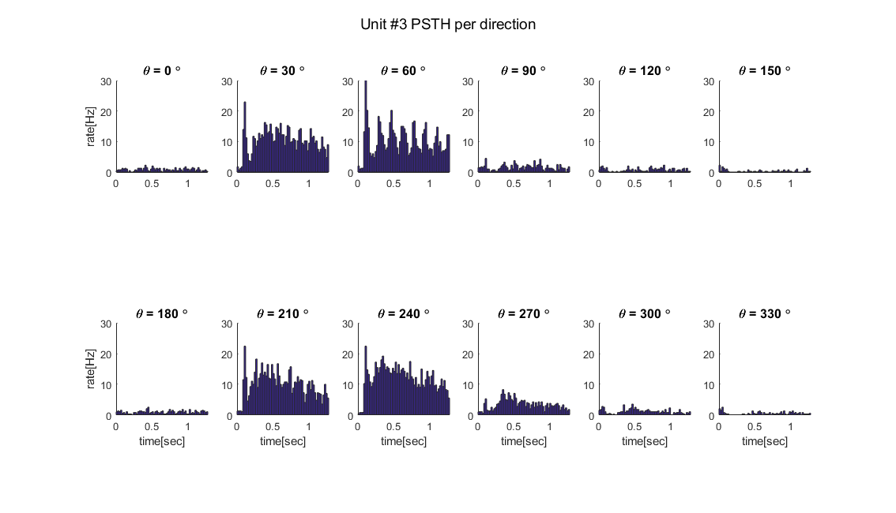
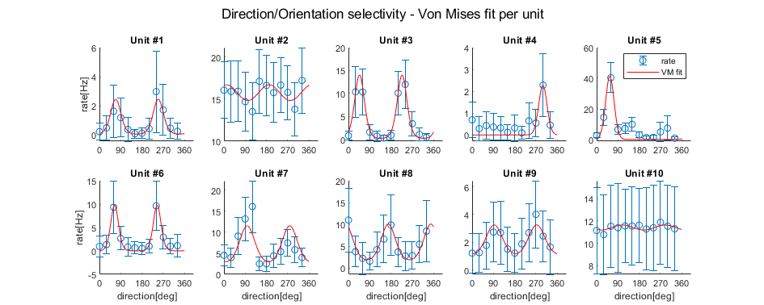

Contents
preparing and organizing date
clear all
close all
load SpikesX10U12D.mat
num_of_neurons = size(SpikesX10U12D,1);
num_of_degs = size(SpikesX10U12D,2);
num_of_rep = size(SpikesX10U12D,3);
creating data parameters
bin_duration = 0.02;
expirament_duration = 1.28;
times_bins_vec = (0:bin_duration:expirament_duration);
chosen_neuron = 3;
num_of_plots_per_raws = 2;
deg_vec = 0:30:330;
num_of_bins = length(times_bins_vec);
onesVec = ones(1,num_of_rep);
sum_of_spike_for_bin = zeros(1,round(expirament_duration/bin_duration));
rate = zeros(num_of_degs,num_of_bins-1);
mat = zeros(num_of_neurons,num_of_degs,num_of_rep,num_of_bins-1);
Ploting parameters
paper_width = 30;
size_ratio = 0.8;
title_fontSize = 12;
fontSize = 11;
axis_ticks_fontSize = 10;
Part 1
for unit_idx = 1:num_of_neurons
for j = 1:num_of_degs
for k = 1:num_of_rep
mat(unit_idx,j,k,:) = histcounts(SpikesX10U12D(unit_idx,j,k).TimeList,times_bins_vec);
end
if unit_idx == chosen_neuron
rep_bin_mat = squeeze(mat(chosen_neuron,j,:,:));
sum_of_spike_for_bin = onesVec*rep_bin_mat;
rate(j,:) = sum_of_spike_for_bin/(bin_duration*num_of_rep);
end
end
end
Plotting
figure('Units', 'centimeters', 'Position' ,[0 ,0, paper_width, paper_width*size_ratio]);
hold on;
for plotID = 1:num_of_degs
subplot(num_of_plots_per_raws,num_of_degs/num_of_plots_per_raws,plotID);
hold on;
sgtitle("Unit #"+chosen_neuron+" PSTH per direction");
if(plotID == 1 || plotID == 7)
ylabel('rate[Hz]', 'FontSize', fontSize);
end
if(plotID >=7 && plotID <= 12)
xlabel('time[sec]', 'FontSize', fontSize);
end
set(gca,'YLim',[0 30],'XLim',[0 expirament_duration],'FontSize', axis_ticks_fontSize);
degree = num2str(deg_vec(plotID));
title("\theta = "+ degree+" \circ", 'FontSize', title_fontSize );
bar(times_bins_vec(1:end-1),rate(plotID,:),'histc');
axis square
end
hold off

Part 2
UnitsData.responseMean = zeros(num_of_neurons,num_of_degs);
UnitsData.responseSD = zeros(num_of_neurons,num_of_degs);
UnitsData.VMfit = cell(num_of_neurons,1);
UnitsData.selctivity = strings([num_of_neurons,1]);
VM_drct = 'A * exp (k * cos (x - PO))';
FitDeff_drct = fittype(VM_drct, ...
'coefficients', {'A','k', 'PO'}, ...
'independent', 'x');
VM_ornt = 'A * exp (k * cos (2*(x- PO)))';
FitDeff_ornt = fittype(VM_ornt, ...
'coefficients', {'A','k', 'PO'}, ...
'independent', 'x');
for unit_idx = 1:num_of_neurons
caculating mean and SD for unit i
for j = 1:num_of_degs
num_spikes_per_rep = sum(squeeze(mat(unit_idx,j,:,:)),2)/expirament_duration;
UnitsData.responseMean(unit_idx,j) = mean(num_spikes_per_rep);
UnitsData.responseSD(unit_idx,j) = std(num_spikes_per_rep);
end
caculating VM fit for unit i
[deg_max, idx_max] = max(UnitsData.responseMean(unit_idx,:));
start_deg = deg2rad(deg_vec(idx_max));
fitOpt_drct = fitoptions (FitDeff_drct);
fitOpt_drct.Lower = [0, 0 , -pi ];
fitOpt_drct.Upper = [inf, inf , pi ];
fitOpt_drct.Startpoint = [2 ,2 , start_deg];
fitOpt_ornt = fitoptions (FitDeff_ornt);
fitOpt_ornt.Lower = [0 ,0 , -pi ];
fitOpt_ornt.Upper = [inf , inf , pi ];
fitOpt_ornt.Startpoint = [2 , 2 , start_deg - 180];
[fitResult_drct, GoF_drct] = fit(deg2rad(deg_vec)',...
UnitsData.responseMean(unit_idx,:)', FitDeff_drct, fitOpt_drct);
[fitResult_ornt, GoF_ornt] = fit(deg2rad(deg_vec)',...
UnitsData.responseMean(unit_idx,:)', FitDeff_ornt, fitOpt_ornt);
if GoF_drct.rmse < GoF_ornt.rmse
UnitsData.VMfit{unit_idx} = fitResult_drct;
UnitsData.selctivity{unit_idx} = 'Direction';
else
UnitsData.VMfit{unit_idx} = fitResult_ornt;
UnitsData.selctivity{unit_idx} = 'Orientation';
end
end
Plotting
x_vec_rad = 0:0.01:2*pi;
x_vec = rad2deg(x_vec_rad);
x_ticks = 0:90:360;
figure ('Color', 'w', 'Units', 'centimeters', 'Position', [0 0 25 10]);
hold on;
sgtitle("Direction/Orientation selectivity - Von Mises fit per unit");
for unit_idx = 1:num_of_neurons
subplot (2,5, unit_idx);
hold on;
title("Unit #" + unit_idx);
errorbar(deg_vec, UnitsData.responseMean(unit_idx,:), UnitsData.responseSD(unit_idx,:), 'o');
plot(x_vec, UnitsData.VMfit{unit_idx}(x_vec_rad), 'r');
xticks(x_ticks);
if unit_idx == 1 || unit_idx == 6
ylabel('rate[Hz]')
end
if unit_idx == 5
legend('rate' , 'VM fit');
end
if unit_idx > 5
xlabel('direction[deg]')
end
end
hold off;
